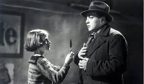

Mengenai Psikopat
Pengertian
Psikopat secara harfiah berarti sakit jiwa. Psikopat berasal dari kata psyche yang berarti jiwa dan pathos yang berarti penyakit. Pengidapnya juga sering disebut sebagai sosiopat, karena perilakunya yang antisosial dan merugikan orang-orang terdekatnya.Psikopat tak sama dengan gila (skizofrenia/psikosis) karena seorang psikopat sadar sepenuhnya atas perbuatannya.
Faktor Penyebab
Walaupun tidak menjawab sepenuhnya penyebab seseorang menjadi psikopat, namun ada beberapa penelitian yang mendukung penyebab seseorang menjadi psikopat. Diantaranya ialah:
- Kelainan di otak
- Lingkungan
- Diri Sendiri
Hubungan antara gejala Psikopat dengan kelainan sistem serotonin, kelainan struktural (decreased prefrontal grey matter, decreased posterior hippocampal volume and increased callosal white matter) dan kelainan fungsional (dysfunction of particular frontal and temporal lobe) otak. (Pridmore, Chambers & McArthur 2005).
Blair, dkk dalam LaBrode (2007) juga meneliti bahwa adanya kemungkinan tidak/kurang berfungsinya prefrontal cortex dan Amygdala di bagian otak sehingga menyebabkan individu tidak memiliki beberapa kemampuan antara lain belajar dari lingkungan (pada akhirnya sulit membedakan baik dan buruk) dan melakukan respon takut (sulit mengalami ketakutan ketika melakukan perbuatan yang melanggar norma). Individu semacam ini akan sulit merasakan perasaan bersalah dan juga sulit untuk ikut merasakan kesakitan dari orang yang disakitinya.
Mereka yang berkepribadian psikopat memiliki latar belakang masa kecil yang tidak memberi peluang untuk perkembangan emosinya secara optimal. (Kirkman, 2002).
Faktor yang paling menentukan adalah ketika individu tumbuh dalam keluarganya. Munculnya beberapa permasalahan dalam keluarga seperti tidak diajarkannya anak untuk memiliki kemampuan sosial (empati, memahami orang lain, dll) perceraian orang tua dan kekerasan pada anak dapat mendorong munculnya pribadi psikopat.
LaBrode (2007) mengungkapkan kasus para pembunuh berantai yang ternyata pada masa kecilnya mengalami kejadian-kejadian tidak menyenangkan dan cenderung traumatis. Para pembunuh berantai ini memiliki sejarah antara lain kekerasan fisik dan seksual pada masa kanak-kanak dan kehilangan pengasuhan dan kelekatan sehat dengan orang tua terutama ibu.
Adanya korelasi antara perilaku orang-orang dengan sindrom psikopat, dengan skor yang tinggi dalam tes kepribadian Revised NEO Personality Inventory (NEO-P-I-R,1992). (Miller & Lynam, 2003)
Tanda dan Gejala
Ada beberapa tanda dan gejala yang menunjukan, bahwa seseorang tersebut adalah psikopat Diantaranya;
- Sering berbohong, fasih, dan dangkal.
- Egosentris dan menganggap dirinya hebat.
- Tidak punya rasa sesal dan rasa bersalah. Kadang-kadang psikopat mengakui perbuatannya, namun ia sangat meremehkan atau menyangkal akibat tindakannya dan tidak memiliki alasan untuk peduli.
- Senang melakukan pelanggaran di waktu kecil.
- Sikap acuh tak acuh terhadap masyarakat.
- Kurang empati. Bagi psikopat, memotong kepala ayam dan memotong kepala orang tidak ada bedanya.
- Psikopat juga teguh dalam bertindak agresif, menantang nyali dan perkelahian, jam tidur larut dan sering keluar rumah.
- Impulsif dan sulit mengendalikan diri. Tidak ada waktu bagi seorang psikopat untuk menimbang baik-buruknya tindakan yang akan mereka lakukan dan mereka tidak peduli pada apa yang telah diperbuatnya atau memikirkan tentang masa depan. Pengidap juga mudah terpicu amarahnya akan hal-hal kecil, mudah bereaksi terhadap kekecewaan, kegagalan, kritik dan mudah menyerang orang hanya karena hal sepele.
- Tidak mampu bertanggung jawab dan melakukan hal-hal demi kesenangan belaka.
- Manipulatif dan curang. Psikopat juga sering menunjukkan emosi dramatis walaupun sebenarnya mereka tidak sungguh-sungguh. Mereka juga tidak memiliki tanggapan fisiologis yang secara normal diasosiasikan dengan rasa takut seperti tangan berkeringat, jantung berdebar, mulut kering, tegang, ataupun gemetar. Pengidap psikopat tidak memiliki perasaan tersebut, karena itu psikopat seringkali disebut dengan istilah "dingin".
- Hidup sebagai parasit karena memanfaatkan orang lain untuk kesenangan dan kepuasan dirinya.
- Biasanya sangat cerdas dan mungkin paling cerdas ketika dibandingkan dengan anak-anak yang lain.
- Biasanya banyak mengetahui sesuatu yang tidak diketahuinya dan marah jika orang lain menyalahkannya. Merasa paling benar, dan biasanya anggapannya itu memang benar.
- Mengetahui sesuatu yang tidak diketahui. Biasanya banyak yang benar dan sangat sedikit sekali yang salah.
- Memiliki perkiraan dengan akurasi yang tinggi (perkiraannya jarang salah dan kebanyakan adalah benar atau benar semuanya).
Tahap Diagnosa
Ada 7 tahap diagnosa psikopat, yakni:
- Mencocokkan kepribadian pasien dengan 20 kriteria yang ditetapkan Prof. Hare. Pencocokan ini dilakukan dengan cara mewawancara keluarga dan orang-orang terdekat pasien, pengaduan korban, atau pengamatan perilaku pasien dari waktu ke waktu.
- Memeriksa kesehatan otak dan tubuh lewat pemindaian menggunakan elektroensefalogram, pencitraan resonansi magnetik, dan pemeriksaan kesehatan secara lengkap. Hal ini dilakukan karena menurut penelitian gambar hasil PET (positron emission tomography) perbandingan orang normal, pembunuh spontan, dan pembunuh terencana berdarah dingin menunjukkan perbedaan aktivitas otak di bagian prefrontal cortex yang rendah. Bagian otak lobus frontal dipercaya sebagai bagian yang membentuk kepribadian.
- Wawancara menggunakan metode DSM (Diagnostic and Statistical Manual of Mental Disorder) IV (The American Psychiatric Association Diagnostic and Statistical Manual of Mental Disorder versi IV) yang dianggap berhasil untuk menentukan kepribadian antisosial.
- Memperhatikan gejala kepribadian pasien. Biasanya sejak usia pasien 15 tahun mulai menunjukkan tanda-tanda gangguan kejiwaan.
- Melakukan psikotes. Psikopat biasanya memiliki IQ yang tinggi.
- Melakukan tes pengetahuan. Psikopat biasanya memiliki pengetahuan yang luas.
- Jika ada anak berumur 3 tahun yang terlalu genius, dan seharusnya anak tersebut tidak mungkin segenius itu, maka bisa jadi anak tersebut psikopat.